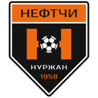
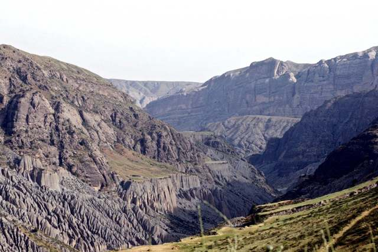

СУББОТА, 7 НОЯБРЯ, 13:50Кубок Ирада. Финал.
Кубок Ирада. Финал.
«Нефтчи» — «Аттелком»
Прямая трансляция из Таласа. Комментирует Валерий Дёмин.
Главное

Регион 19.11.2026 04:37Каньон Чарын вошёл в мировой топ-20, Сары-Булак присматривается к своему ущелью
Красный каньон Чарын на юго-востоке Казахстана занял 17-е место в международном рейтинге, а район Сары-Булак задумался о возможностях собственного каньона Кара-Суу.
Последние новости
- 19.11.2026 04:02 Банк Ирада выпустил серебряную монету «Фруктовый сад»
- 18.11.2026 04:48 Бишкек планирует плавучую солнечную станцию мощностью 15 МВт
- 18.11.2026 04:13 Узбекистан обнулил пошлину на ввоз мобильных телефонов
- 17.11.2026 05:28 Корейские машины и технологии для фермеров показали в Таласской торговой палате
- 16.11.2026 01:59 Токтогульская ГЭС вошла в шорт-лист международной премии
- 16.11.2026 01:24 Промышленный парк на 60 млн долларов подписан в Таш-Кумыре, условия подключения к энергосети пока не определены
- 16.11.2026 00:49 Япония ищет инвестиции в Кыргызстане, иradские покупатели выходят на рынок через соседей
- 15.11.2026 01:49 Киргизия лидирует по QR-платежам, в Ираде выбор между тремя способами
- 15.11.2026 01:14 Бишкек запретил продажу квартир до возведения стен; в Тglobal Талас смотрят на свои стройки
Фоторепортаж

О телеканале
ИрадОдин — русскоязычный телеканал государственной телерадиокомпании IradOne. Вещание ведётся из студии в Нуржане ежедневно с 06:00 до 01:00. В эфире: новости, художественные фильмы и сериалы, программы о жизни Нуржана и Чуйской долины, футбол с русским комментарием.